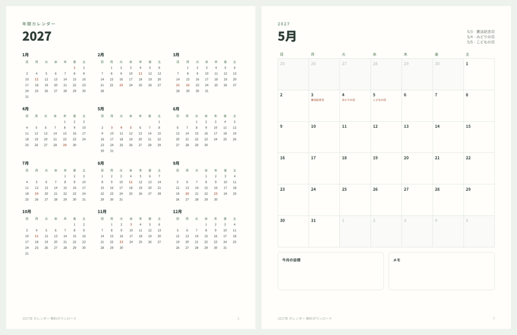

無料 · PDF · 2027年(令和9年)
2027年 カレンダー 無料 印刷用PDF(祝日入り)
年間カレンダー1ページと、1月から12月までの月間カレンダー12ページのPDFです。祝日と振替休日をすべて入れ、日曜始まり、毎日の欄に書き込めるスペースがあります。用紙はレターサイズで、A4には「用紙に合わせる」で印刷できます。メール登録は不要です。
2027年カレンダーをダウンロード(PDF・13ページ)必要な月だけ、何度でも印刷できます。

2027年の祝日一覧
| 日付 | 祝日 |
|---|---|
| 1月1日(金) | 元日 |
| 1月11日(月) | 成人の日 |
| 2月11日(木) | 建国記念の日 |
| 2月23日(火) | 天皇誕生日 |
| 3月21日(日) | 春分の日 |
| 3月22日(月) | 振替休日 |
| 4月29日(木) | 昭和の日 |
| 5月3日(月) | 憲法記念日 |
| 5月4日(火) | みどりの日 |
| 5月5日(水) | こどもの日 |
| 7月19日(月) | 海の日 |
| 8月11日(水) | 山の日 |
| 9月20日(月) | 敬老の日 |
| 9月23日(木) | 秋分の日 |
| 10月11日(月) | スポーツの日 |
| 11月3日(水) | 文化の日 |
| 11月23日(火) | 勤労感謝の日 |
春分の日(3月21日)が日曜日のため、翌22日(月)が振替休日になります。ゴールデンウィークは5月1日(土)から5日(水)まで、5連休です。春分の日・秋分の日は国立天文台の暦要項(春分3月21日、秋分9月23日)にもとづいています。
お金の管理もしたい方へ
月ごとの支出を自動で集計する家計簿 2027 エクセル無料テンプレートや、手取りから費目ごとの目安がわかる家計の割合 目安計算ツールもあります。